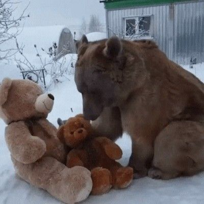
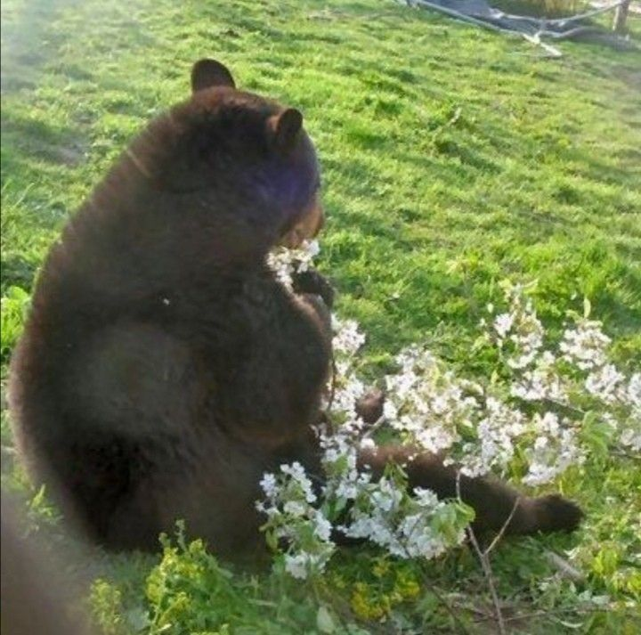
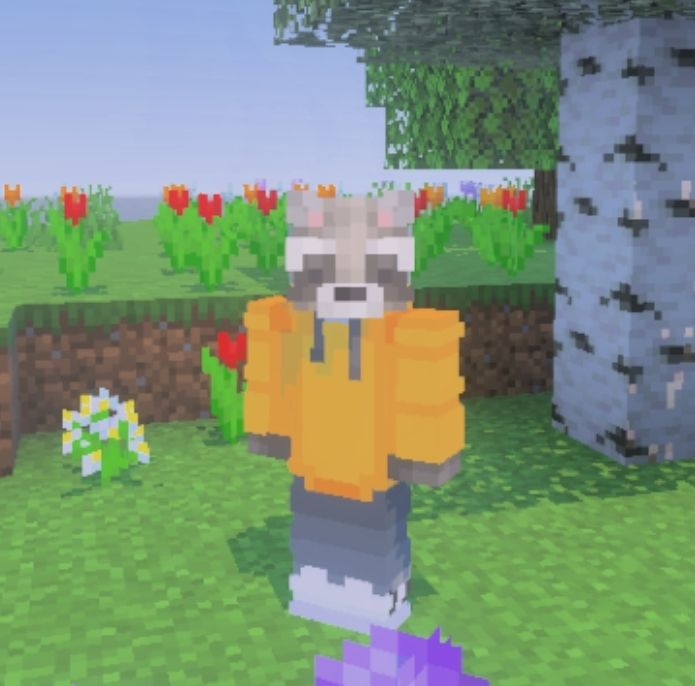
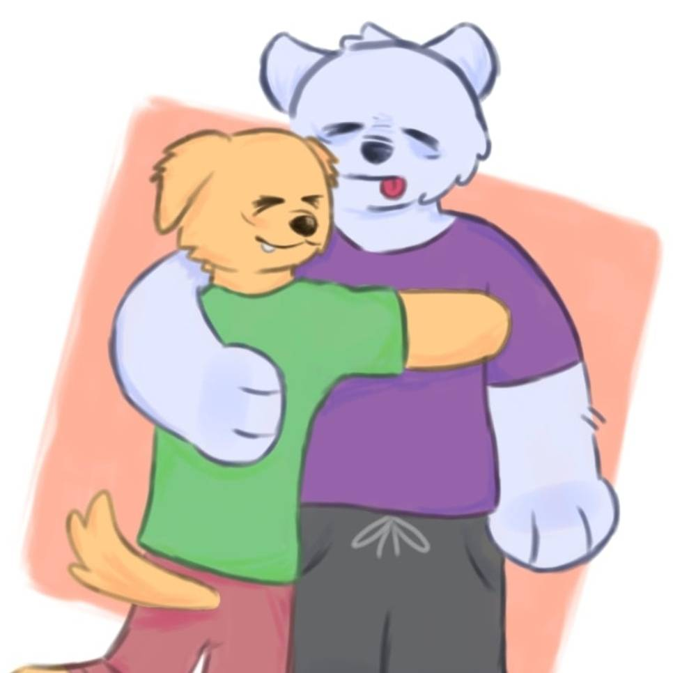
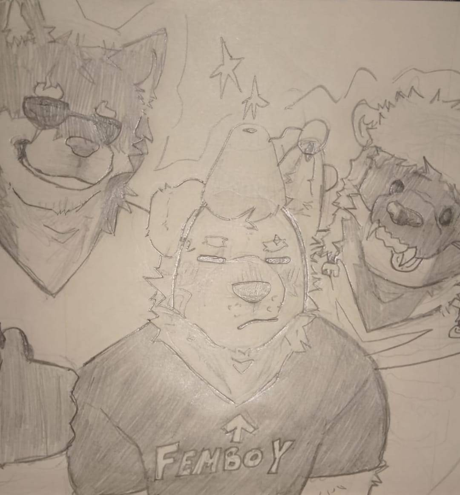
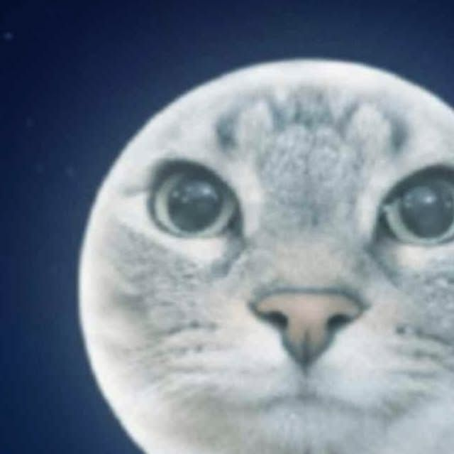

Todo dia é dia de mostrar cuidado por quem você ama!
E é por isso que eu dedico mais do meu tempo e esforço para fazer algo que expresse meu carinho por você. Até porque isso já são milhares de experiências juntos, e uau, 550 dias de amizade! Já foi tempo o suficiente para eu te considerar parte do meu dia, e da minha vida. Honestamente, não sei o que eu seria sem você, que é uma parte essencial na minha felicidade e conforto. <33
" Minha melhor escolha foi te escolher como melhor amigo. " ~ GoldenDoggo

Todas as vezes em que falei isso, foi sincero, e é algo que acredito fortemente, pois sua amizade pra mim foi um presente que apareceu quando eu mais precisei. E sei que não me arrependeria nunca por isso, já que mesmo quando pareceu ter acabado, eu no fundo ainda queria demais ter você por perto, assim como quero agora. Só posso agradecer por ter um Oliver na minha vida, por ter esse alguém especial que me alegra constantemente e me deixa ser eu. Em resumo, EUU TE AMOOO!

You are Beary special to me... ʕ´•ᴥ•`ʔ ⊹ ࣪ ˖
Já falei mais vezes do que se dá pra contar o quão incrível você é pra mim, amo cada coisa que faz por mim, incluindo essas conversas bobas que temos de vez em quando. Se eu digo que tô contente, nem sempre é só por acaso, muito possivelmente eu refleti sobre nossa amizade e me toquei na sorte que é ser seu amigo. Nenhuma palavra descreve a sensação que é você ter um afeto tão grande por alguém, e eu não trocaria uma amizade dessa por nada.
Saiba que pode contar comigo sempre, e que eu posso estar no meu pior dia, mas ainda quero ter um espaço pra você na minha vida, até porque você melhora até esses dias ruins.
Cada memória com você é inesquecível, eu quero guardar elas comigo pra sempre. Mas se minha cabeça de idoso esquecer, quero ter você pra me lembrar delas no futuro também...

15 de dezembro 2025 - Quando você me deu o jogo, eu ainda sou muito grato por isso...
18 de agosto de 2025 - O primeiro desenho que fiz para você quando a gente começou a falar falar no outro app... Também é meu favorito


30 de janeiro - Meu aniversário, e um dos melhores porque eu já posia comemorar ele com você.
Essas e muitas outras memórias que guardei já estão eternizadas no meu coração, e eu mal posso esperar para todas as outras que ainda vamos fazer juntos. Você é o melhor que eu poderia pedir, mesmo que eu não mereça tanta bondade, muito obrigado por tudo, meu amigo.

Alley Cat - Purrple Cat
Desculpa não por "Crystal Castles", o site iria cair pelos direitos autorais... Mas finge que eu coloquei uma super animada pra tocar.